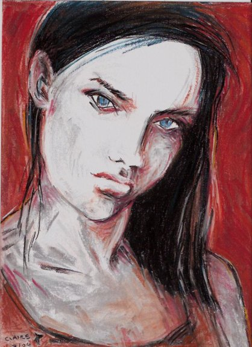

[Previous entry: "Get in on an order of the DullHawk flag"] [Main Index] [Next entry: "Gun nuts are all the same"]
07/30/2006 Archived Entry: "And now for something a little different"

AND NOW FOR SOMETHING COMPLETELY DIFFERENT. The other day I drew a slick & lucious glamor girl after somebody made a request. That girl coulda been right out of Playboy. (No, I haven't made her visible online; she's just for that one man unless he gives permission for me to post her.) This morning I decided to see what else I could do with the same model in the same pose. I don't think she'd recognize herself. But I kinda like her attitude.
A little scary posting this, knowing that most people will like it less than my earlier drawings. Well, so be it. She represents a technical advance for me in several ways, and posting her is also a needed experiment in courage for my budding inner artist.
Posted by Claire @ 02:04 PM CST
Link